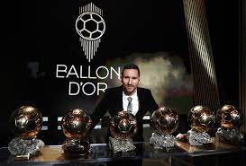

LIONEL MESSI
Venha descobrir mais sobre o jogador Lionel Messi!

SUA HISTORIA
Messi é jogador de futebol, que atua como atacante. Aos 7 anos, em 1994, jogando pelo clube argentino Newell’s Old Boys,
de sua cidade natal, foi descoberto por um olheiro do Barcelona, da Espanha. Aos 13, fez sua estreia na Europa, firmando carreira por lá.
Tornou-se o primeiro jogador a vencer a Bola de Ouro, prêmio da FIFA para o melhor do mundo, por quatro anos consecutivos,
de 2009 a 2012. Depois, foi novamente eleito em 2015, 2019 e 2021, totalizando sete conquistas. Também é o maior artilheiro e detentor
de títulos da história do Barcelona.
Defende a Argentina desde 2005, atuando nas Copas de 2006, 2010, 2014, 2018 e 2022.
Em 2021, conquistou seu primeiro título com a seleção principal ao vencer a Copa América.
É também o maior goleador de todos os tempos do país latino.
É casado desde 2017 com a modelo Antonella Roccuzzo, que conhece desde a infância e namora desde a juventude.
O casal tem três filhos: Thiago, que nasceu em novembro de 2012; Mateo, que chegou em setembro de 2015; e Ciro, de março de 2018.
BARCELONA
Com 13 anos, quando ainda fazia parte das divisões de base do Newell's Old Boys, Messi foi levado por seu pai, Jorge Messi, para a Espanha,
onde morava uma prima da família. Depois de passar por várias categorias do Barcelona, com 16 anos, Messi estreou na equipe titular
em uma partida amistosa contra o Futebol Clube do Porto, na inauguração do Estádio do Dragão em 16 de novembro de 2003.
Messi passou 21 anos jogando no Barcelona, período em que participou de 778 e fez 672 gols, tornando-se o maior artilheiro da história do clube.
Foi o jogador que mais marcou gols em uma única temporada: 91 gols em 2012. A era Messi chegou ao fim no dia 8 de agosto de 2021,
quando seu contrato não foi renovado e o jogador, muito emocionado, se despediu do time em uma coletiva de imprensa.
TITULOS CONQUISTADOS NO BARCELONA
La Liga: 2004–05, 2005–06, 2008–09, 2009–10, 2010–11, 2012–13, 2014–15, 2015–16, 2017–18 e 2018–19
Supercopa da Espanha: 2005, 2006, 2009, 2010, 2011, 2013, 2016 e 2018
Liga dos Campeões da UEFA: 2005–06, 2008–09, 2010–11 e 2014–15
Copa do Rei: 2008–09, 2011–12, 2014–15, 2015–16, 2016–17, 2017–18 e 2020–21
Supercopa da UEFA: 2009, 2011 e 2015
Copa do Mundo de Clubes da FIFA: 2009, 2011 e 2015
SUA CARREIRA
Fez história no Real Madrid. Foi jogador do Manchester United, do Juventus, da Itália e da Seleção Portuguesa.
Foi eleito o melhor jogador do mundo em 2008, 2013, 2014, 2016 e 2017.
INFANCIA
Cristiano Ronaldo dos Santos Aveiro nasceu na cidade de Funchal, na Ilha da Madeira, Portugal, no dia 05 de fevereiro de 1985.
Filho caçula do jardineiro José Diniz Pereira Aveiro e da cozinheira Maria Dolores dos Santos Aveiro,
quando criança passava a maior parte de seu dia jogando bola na rua com os amigos.
INÍCIO DE CARREIRA
Cristiano Ronaldo começou sua carreira aos 9 anos de idade quando estreou no Futebol Clube Andorinha, na Ilha da Madeira.
Com grandes habilidades, logo despertou o interesse do maior clube da ilha, o Nacional, que o contratou em 1995.
TITULOS DE CRISTIANO RONALDO
Bola de Ouro da Fifa 2013-2014
Homem do jogo da Supercopa da UEFA 2014
Melhor Jogador da UEFA 2013-14, 2015-16 e 2016-17
Bola de Ouro da UEFA 2007-08, 2010-11, 2-13-14, 2014-15
Bola de Ouro do Campeonato do Mundo de Clubes 2016
Futebolista do Ano em Portugal 2007, 08, 09, 11, 12, 13, 15, 16, 17 e 18
Melhor jogador do mundo pela ESPY Awards 2018
Chuteira de Ouro da revista France Football
PARA FICAR LIGADO EM MAIS INFORMAÇÕES SOBRE O CR7, SIGA-O NO INSTAGRAM.
instagram Cristiano Ronaldo.
PARA VER TODOS OS ARQUIVOS.
Acesse o GitHub para pegar os exemplos feitos